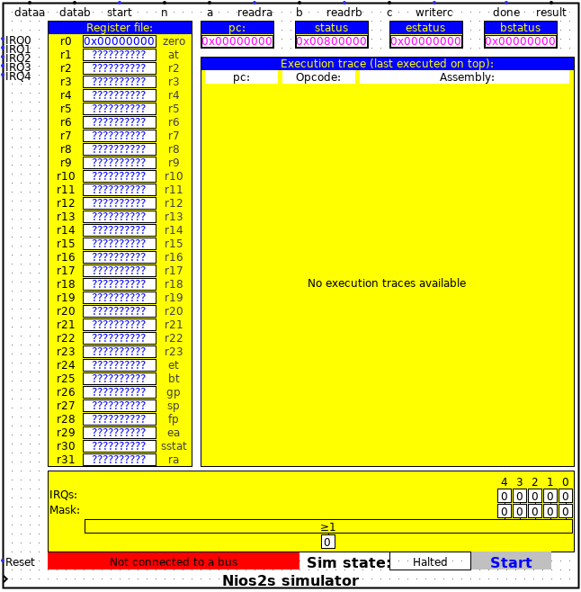

Nios2 仿真器
| 库： | 片上系统组件 |
| 引入版本： | 3.2 |
| 外观： |
 |
行为
nios2 仿真器是 Intel nios2 软核（f 版本除外）的完整 ISA 仿真器。它可用于展示嵌入式系统上程序的执行过程。请注意，虽然仿真器每个时钟周期执行一条指令，但它并非周期精确仿真，因为缓存停顿、数据依赖停顿、总线等待周期等因素未纳入仿真。它提供功能仿真，用于展示硬件尚未就绪的 SOC 设计。
引脚
在 Nios2 仿真组件的北侧，您会找到自定义指令接口信号，可在此添加自定义指令硬件/加速器用于仿真。关于如何使用它们，请参考 Intel 关于 nios2 自定义指令的文档。
在 Nios2 仿真组件的西侧，存在以下输入：
- 复位：这是 Nios2 仿真组件的复位输入，当为“1”时将异步复位 Nios2，当为“0”时让 CPU 运行。
- 时钟：这是 Nios2 仿真器组件的时钟输入。每次在此输入上检测到上升沿时，将取指并执行一条新指令。
- IRQ[0..31]：Nios2 仿真器提供最多 32 个 IRQ 输入（由下文描述的 IRQs 属性定义）。每个 IRQ 输入均为高电平有效。关于如何向这些输入提供正确信号，请参考 Intel 关于 IRQ 行为的文档。
属性
Nios2 仿真组件提供以下属性：
- 复位向量：此属性指定当复位引脚激活时要执行的第一条指令的存储器地址。通常，此处指定的值应为程序入口点的地址。请注意，所有地址均为 32 位值。
- 异常向量：当检测到 IRQ（见上文 IRQ 引脚）或软件异常指令时，Nios2 仿真器将从此地址开始执行程序。通常，此处指定的值应为程序中异常处理例程的地址。
- 断点向量：此属性指定断点服务例程的存储器地址，当检测到断点指令时执行该例程。
- IRQ 线数量：此属性指定可用的外部 IRQ 引脚数量。其值可在 0（无 IRQ 线）到 32（最大 IRQ 线数）之间。
- 状态可见：当通过为此属性指定“否”来禁用状态显示时，可以提高仿真速度（请参阅库描述中关于仿真速度的说明）。
- 标签：此处可指定组件的标签。请注意，标签在许多地方用于引用此组件。如果未定义标签，组件将被引用为“Nios2s simulator @x,y”，其中x和y是此组件锚点在图纸内的绝对坐标。
- 标签字体：通过此属性可指定标签的字体。
- 标签可见：通过此属性可指定标签是否可见。
- 连接的总线：此属性允许将 Nios2 仿真器连接到总线组件。为了成功仿真，Nios2 仿真器必须连接到此类组件。
可见组件
Nios2 仿真器具有多个状态组件，当状态可见属性设置为真时，这些组件可见。当组件隐藏在子电路中时，大多数这些组件也可在单独窗口中查看（请参阅下文的超级组件菜单）。不同的组件包括：
- 寄存器文件。Nios2 处理器包含 32 个通用寄存器（r0..r31）。这些寄存器的当前值显示在左上角标有 寄存器文件 的方框中。当寄存器值显示为一串问号时，表示该值未知（处理器的正常启动行为）。每次向寄存器写入值时，该值将以蓝色高亮显示，并显示新值。
- 程序计数器。程序计数器（PC）保存当前地址，下一条指令将从该地址取出。
- 状态寄存器。状态寄存器（status）保存 Nios2 处理器的当前状态。有关状态寄存器的信息，请参阅 Intel 关于 nios2 处理器的文档。
- 异常状态寄存器。异常状态寄存器（estatus）在进入异常时保存状态寄存器的副本。有关 estatus 寄存器的信息，请参阅 Intel 关于 nios2 处理器的文档。
- 断点状态寄存器。断点状态寄存器（bstatus）在执行断点指令时保存状态寄存器的副本。有关 bstatus 寄存器的信息，请参阅 Intel 关于 nios2 处理器的文档。
- 执行跟踪窗口。执行跟踪窗口显示 nios2 处理器最近执行的 21 条指令。最后执行的指令显示在顶部。跟踪窗口提供三部分信息，即：
- 取指时的程序计数器值。
- 所取指令的二进制操作码。
- 如果所取指令具有正确的二进制操作码，则显示该指令的汇编助记符。
- IRQ 状态、irq 屏蔽和 irq 待处理显示。如果通过 IRQ 线数量 属性选择了至少一个 IRQ 输入，则会显示此组件。对于每个 IRQ 引脚，组件顶部的一个方框将指示 IRQ 线的当前状态。下方的方框将指示 IRQ 屏蔽寄存器中的对应位。最底部的方框将指示是否有未屏蔽的 IRQ 待处理。注意： 此组件不显示状态寄存器中的全局 IRQ 使能位状态。
- 连接总线指示器。在组件左下方（如上图红色所示）有一个指示器，显示 nios2 连接到哪个 总线组件。如果 nios2 连接到 总线组件，该指示器将变为绿色并显示所连接总线的标签。此总线指示器在独立窗口视图中不可用，并且不会被 状态可见 属性隐藏。
- 仿真控制组件。在连接总线指示器的右侧，您可以找到仿真控制组件。该组件在 此处 有更详细的描述，并作为动态元素提供。
动态元素
Nios2 仿真组件将 soc 仿真控制器 作为 动态组件 提供。
菜单项
在 Nios2 仿真器符号上单击鼠标右键将弹出一个菜单。该菜单扩展了三个新菜单项，即：
- 打开汇编器。选择此菜单项将打开 汇编器。汇编器允许您编写自己的汇编程序并在 Nios2 上运行。
- 读取 elf 文件。选择此菜单项将打开一个文件选择窗口，您可以在其中读取由例如 gcc 交叉编译工具链为 Nios2 处理器生成的 elf 文件（可执行文件）。elf 文件的可执行内容将被加载到存储器中，Nios2 的复位向量将设置为所加载程序的入口点，并且 Nios2 仿真器将初始化为复位状态。请注意，加载 elf 程序不会修改 复位向量 属性的值。
- 显示已加载程序。仅当可执行程序已加载到存储器中（通过汇编器或读取 elf 文件）时，此菜单选项才会出现。选择此菜单项将显示 反汇编器。
超级电路菜单项
当 Nios2 仿真器位于子电路中时，它会向该子电路的菜单添加四个菜单项，即：
- <name>：打开汇编器。选择此菜单项将打开汇编器。汇编器提供了编写自己的汇编程序并在 Nios2 上运行的可能性。
- <name>：读取 elf 文件。选择此菜单项将打开一个文件选择窗口，您可以在其中读取由例如 gcc 交叉编译工具链为 Nios2 处理器生成的 elf 文件（可执行文件）。elf 文件的可执行内容将被加载到存储器中，Nios2 的重置向量将设置为已加载程序的入口点，并且 Nios2 仿真器将初始化为重置状态。请注意，加载 elf 程序不会修改重置向量属性的值。
- <name>：显示 CPU 状态。此菜单项将打开一个新窗口，显示如可见组件部分所述的第 1 到第 7 个可见组件。
- <name>：显示已加载的程序。仅当可执行程序已通过汇编器或读取 elf 文件加载到存储器中时，才会出现此菜单选项。选择此菜单项时，将显示反汇编器。
在上述菜单项中，<name> 是 Nios2 仿真器的标签（参见上文的标签属性）。如果未给出标签名称，则<name> 由Nios2@x,y给出，其中x和y是 Nios2 仿真器在子电路中锚点位置的坐标。
支持的指令
| 算术和逻辑指令 | |||||
| and | or | xor | nor | sub | mul |
| div | divu | mulxss | mulxuu | mulxsu | andi |
| ori | xori | andhi | orhi | xorhi | addi |
| subi | muli | nop | mov | movhi | movi |
| movui | movia |
|
|||
| 比较指令 | |||||
| cmpeq | cmpne | cmpge | cmpgeu | cmplt | cmpltu |
| cmpgt | cmpgtu | cmple | cmpleu | cmpeqi | cmpnei |
| cmpgei | cmpgeui | cmplti | cmpltui | cmpgti | cmpgtui |
| cmplei | cmpleui |
|
|||
| 自定义指令 | |||||
| custom |
|
||||
| 数据传输指令 | |||||
| ldw | ldh | ldhu | ldb | ldbu | ldwio |
| ldhio | ldhuio | ldbio | ldbuio | stw | sth |
| stb | stwio | sthio | stbio |
|
|
| 其他控制指令 | |||||
| trap | eret | break | bret | rdctl | wrctl |
| flushd | flushda | flushi | initd | initda | initi |
| flushp | sync |
|
|||
| 程序控制指令 | |||||
| callr | ret | jmp | call | jmpi | br |
| bge | bgeu | blt | bltu | beq | bne |
| bgt | bgtu | ble | bleu |
|
|
| 移位与循环指令 | |||||
| rol | ror | sll | sra | srl | roli |
| slli | srai | srli |
|
||
已实现的控制寄存器
| 寄存器 | 名称 | 备注 |
| 0 | 状态 | 仅 RSIE 恒为 1 和 PIE |
| 1 | estatus |
|
| 2 | bstatus |
|
| 3 | ienable | 位数取决于 IRQ 线数量 属性。 |
| 4 | ipending | 位数取决于 IRQ 线数量 属性。 |